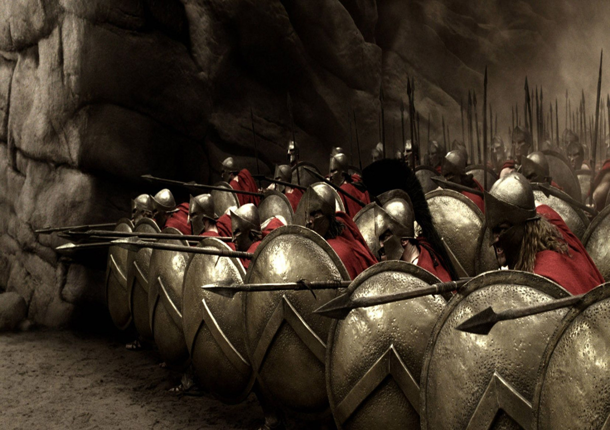

Values to be a true Spartan!
Determination
To be determined is to complete every task to the best of your ability.
You are well motivated and push through obstabcles. Positivity is key!
Studious
To be studious is to never give up in the pursuit of knowledge and continual learning!
You should always ask questions and reflect on our strengths and weaknesses to develop continually.
Imaginative
To be imaginative is always be thinking of new solutions and always be improving your work!
You should be continually open minded and make sure to share your ideas with the world
Analytic
To be Analytic is to be an effective problem solver and analyse all information.
You should make use of any information you learn and be an effective implementer of new concepts!